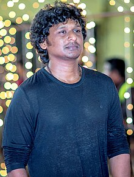

LOKESH KANAGARAJ
Lokesh Kanagaraj (/loʊkeɪʃ kʌnʌɡʌrɑːdʒ/; born 14 March 1986) is an Indian film director, screenwriter and producer who works in Tamil films. He started his career with a short film in the 2016 anthology Aviyal.
He later directed his first feature film Maanagaram (2017). He created the Lokesh Cinematic Universe (LCU) franchise
after the commercial success of Kaithi (2019), the franchise's first installment. He directed Master (2021),
a standalone featuring Vijay which emerged a commercial success during the COVID-19 pandemic.
This was followed by Vikram (2022), the second installment in the LCU, with Kamal Haasan in the lead role,
which emerged as one of the highest grossing Indian films. He then worked on Leo (2023), which became his most successful film, it became one of the highest grossing Indian films, earning over ₹600 crore (US$75 million) worldwide,[3] collaborating with Vijay again and serving it as the third installment in the LCU.